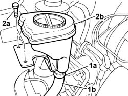
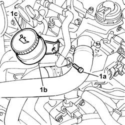

1084A22 ENGINE OIL FILLER - R R
- Path
- Procedures > 10 ENGINE > 1084 ENGINE LUBRICATION > 1084A INDICATORS/CHECK DEVICES > 1084A22 ENGINE OIL FILLER - R R
- Kind
- repair procedure (removal / refitting; the operation number is the code)
- Applies to
- engines: 2.0 16v, 2.0 16V JTD, 2.2 16V JTD; all production periods
- Interactive page
- https://sloeber94.github.io/elrnDB-fUlss/en/#/179007154
Applies to: engines: 2.0 16v; all production periods
 Removing
Removing
 Refitting
Refitting1. Remove the retaining band (1a) and release the hose (1b).
2. Undo the bolts fixing the bracket (2a) and remove the engine oil filler (2b).

Applies to: engines: 2.0 16v; all production periods
Refitting
Removing- Fit the engine oil filler complete with bracket and tighten the fixing bolts.
- Fit the hose removed previously and restore the fastening.
Applies to: engines: 2.0 16V JTD; all production periods
Removing
Refitting1. Undo the fixing bolt (1a) and open the fastening band (1b) releasing the pipe and removing the engine oil filler (1c).

Applies to: engines: 2.0 16V JTD; all production periods
Refitting
Removing- Position the engine oil filler.
- Fit the pipe and restore the retaining band.
- Tighten the fixing bolt.
- Check and, if necessary, top up the engine oil level.